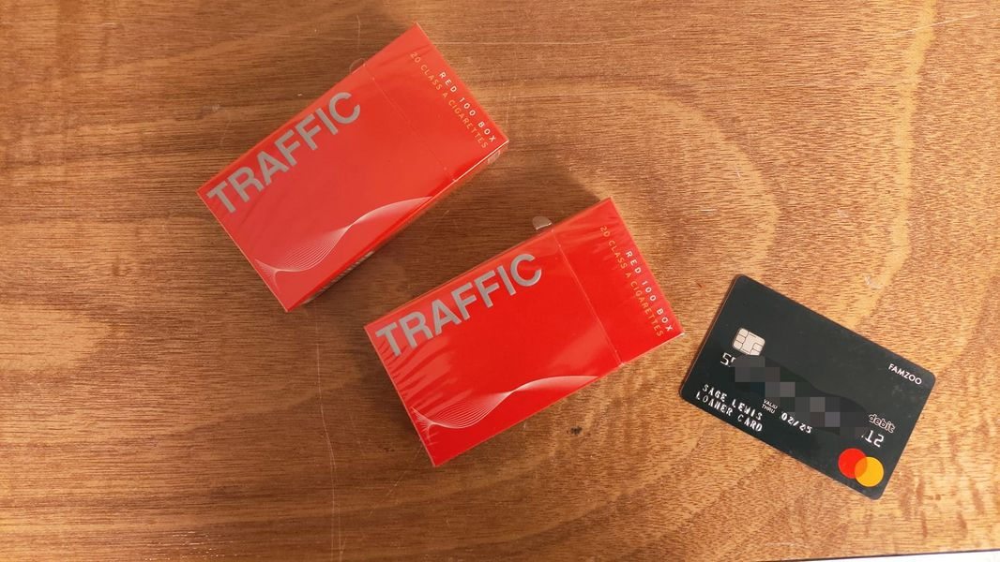

Mobile uploads
Where ever I go to help those suffering, you are always there ahead me. You've been there longer and been doing it better. Your kindness and generosity and compassion overwhelms me time and time again. You break my heart with kindness.
You come in the form of old wealthy people, young city people and middle age Trump supporters. Compassion comes in all forms.
It's always you that I see. You are always there.
I took these 2 packs of cigarettes and this debit card to my friend Josh Imler. He's in CASC - Community Alternative Sentencing Center.
The woman ahead of me was there to drop off items for her grandson. We can't see our people. We are only able to drop off items.
She brought 4 packs of Winston cigarettes, 2 bottles of shampoo and $25 money order. The woman ahead of her brought 2 packs of cigarettes, shampoo and $145 money order. I couldn't see what the man ahead of her brought.
I was so bothered to bring even these couple things. I nearly didn't go at all. I wasn't doing this with a giving spirit. I was annoyed to have to do it at all.
But there you were. Quietly, beautifully, graciously giving. And giving so abundantly.
I'm telling you. If you want to see what the love of God looks like, go where the suffering is. The people giving and caring are as awe inspiring as anything you could ever imagine the Universal One creator could ever be.